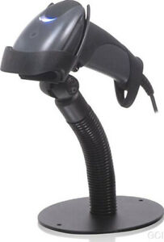

Lector Código de Barras HONEYWELL MK9590 -RS232-

CARACTERÍSTICAS TÉCNICAS
Profundidad de campo de exploración 0 mm - 305 mm (0 "- 12") de 0,330 mm (13 mil) los códigos de barras por defecto.
Ancho de exploración sobre el terreno de 50 mm (2 ") @ cara; 300 mm (11,8") @ 305 mm (12 ".
Scan Plan único de exploración línea.
Velocidad de escaneado 100 líneas de escaneo por segundo.
Ancho mínimo de elemento 5 mil (0,127 mm).
Contraste de impresión 35% diferencia mínima de reflectancia.
OPERACIONALES
Fuente de luz 650 nm ± 10 nm VLD.
Potencia Láser Menos de 1 mW (pico)
Decode Capability Autodiscriminates todos los estándares de códigos de barras 1D; para otros llamar a un representante de servicio al Metrologic.
Interfaces de sistemas RS232.
Número de Caracteres la lectura de hasta 80 caracteres de datos.
Operación Beeper 7 tonos o no bip.
Indicadores (LED) azul = unidad de potencia, dispuesta a escanear; White = buena lectura; Amarillo = CodeGate Steady está inactivo.
MECÁNICAS
Altura 160 mm (6,3 ").
Profundidad 100 mm (3,93 ").
Ancho Handle: 28 mm (1,10 "); Cabeza: 65 mm (2,56").
Peso 150 g
ELÉCTRICAS
Voltaje de entrada 5 VDC ± 0,25 V.
Potencia de funcionamiento: 650 mW; Standby: 375 mW (típico).
Actualidad de funcionamiento: 130 mA @ 5VDC; Standby: 75mA @ 5VDC (típico).
Transformadores DC Clase II; 5.2V @ 1 A.
LED clase Clase 1; IEC60825-1: 1993/A1: 1197 + A2: 2001.
Clase 1: EN60825-1: 1194/A11: 1996 + A2: 2001.
EMC FCC Clase B
AMBIENTALES
Temperatura de funcionamiento 0 ° C hasta 40 ° C (32 ° F a 104 ° F).
Temperatura de almacenamiento -40 ° C hasta 60 ° C (-40 ° F a 140 º F).
Humedad 5% a 95% de humedad relativa, sin condensación.
Los niveles de luz Hasta 4842 Lux (450 pies velas).
Choque Diseñado para soportar 1.
Precio: $113.50
Comprar Ahora
Recibir notificaciones de nuevos
productos y promociones especiales
Inicio
Productos
Respuestos y accesorios
Ofertas
Visión y Misión
Contáctenos
- Copyright W.P.C.R.X Cash Machines -